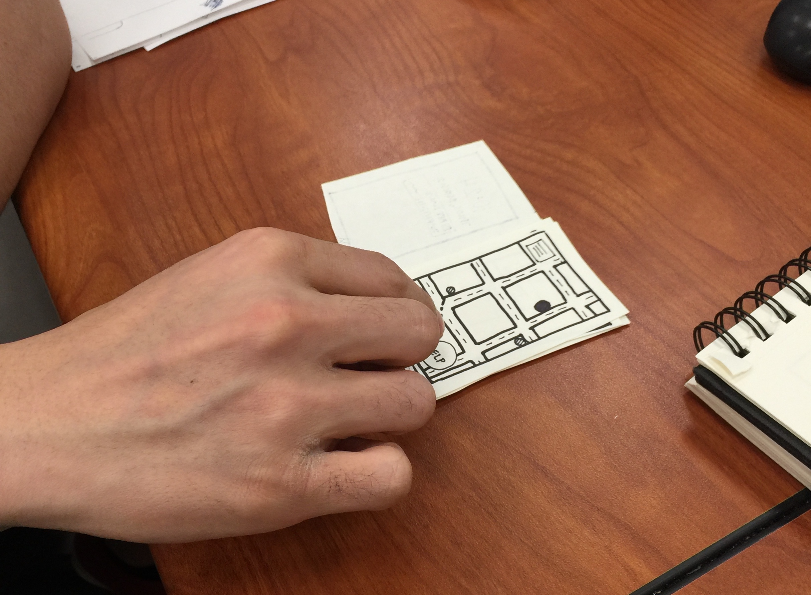
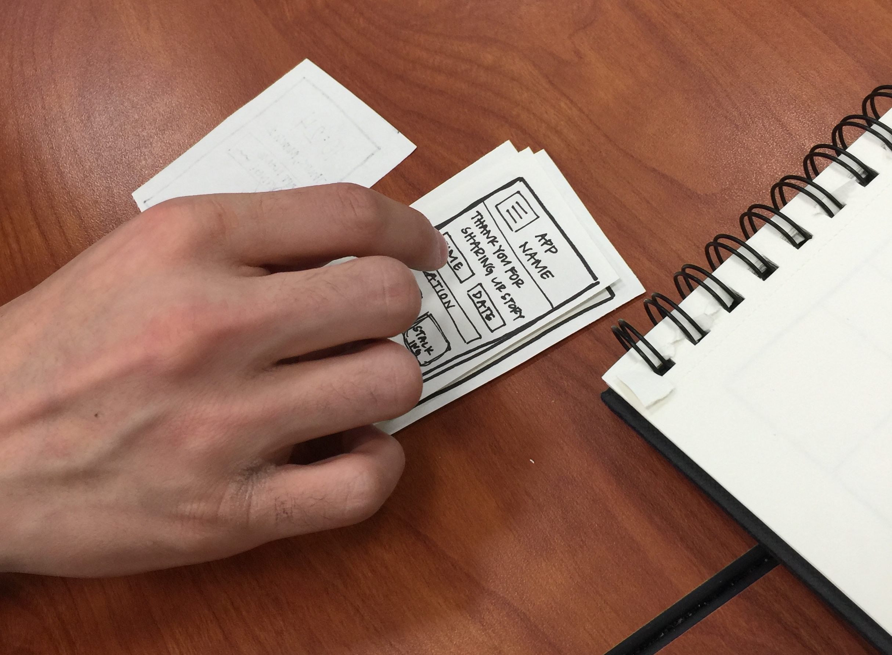
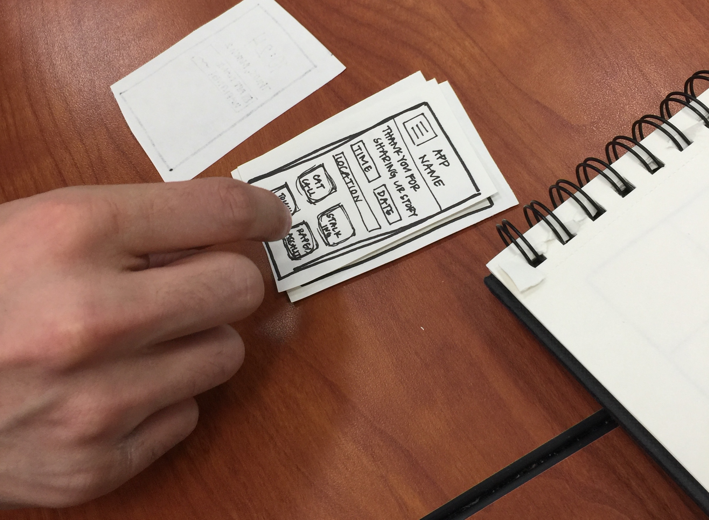

I have iterated my prototype to consist of five main screens: the reporting page, the map, the opened menu, the immediate response page, and the push notification page. The reporting page will consist of categorical icons to assist the user with reporting. The map will take up the whole interface with a small menu in the top left corner and a large red help button in the bottom right corner. The immediate response page shows either a "Call 911" button or "Send Alert" button that will alert other users of an immediate threat in progress. One tester expressed the possibility of a notification being sent 24 hours after a "Send Alert" button is pressed that encourages the user to submit a report based on the incident after some time to process has passed. Another user suggested a paragraph text option for users to describe the attacker and help the safety of the community.


